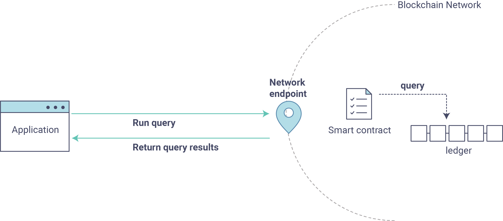
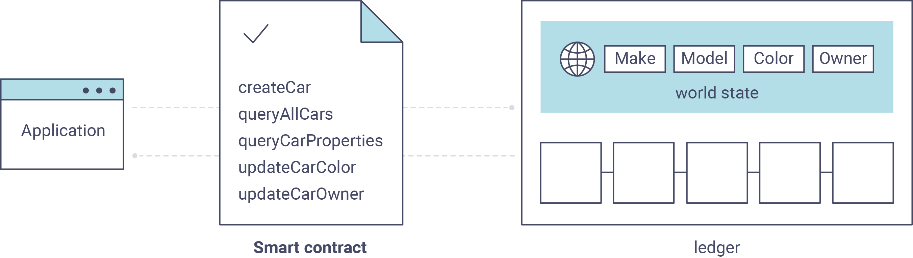

Writing Your First Application - 编写你的第一个应用¶
Note
If you’re not yet familiar with the fundamental architecture of a Fabric network, you may want to visit the Introduction and Building Your First Network - 构建你的第一个网络 documentation prior to continuing.
如果你对 Fabric 网络的基本架构还不了解，请在开始阅读本文之前，先阅读 Introduction 和 Building Your First Network - 构建你的第一个网络 文档。
In this section we’ll be looking at a handful of sample programs to see how Fabric
apps work. These apps (and the smart contract they use) – collectively known as
fabcar – provide a broad demonstration of Fabric functionality. Notably, we
will show the process for interacting with a Certificate Authority and generating
enrollment certificates, after which we will leverage these generated identities
(user objects) to query and update a ledger.
在本节中，我们会通过一些示例程序了解到 Fabric 应用是如何工作的。
这些应用（包括它们利用的智能合约，即 fabcar）提供了一个对 Fabric 功能的全方面的演示。
特别的，我们会展示与证书认证服务交互并生成登记证书的过程，随后我们利用这些生成的身份标识文件（用户侧）来查询和更新账本。
We’ll go through three principle steps:
我们会展示如下三个主要过程：
1. Setting up a development environment. Our application needs a network to interact with, so we’ll download one stripped down to just the components we need for registration/enrollment, queries and updates:
1. 构建一个开发环境。 我们的应用需要和一个网络进行交互，所以我们需要下载一个经过裁剪的网络，以刚好满足我们注册、登记、查询和更新的要求：

2. Learning the parameters of the sample smart contract our app will use. Our smart contract contains various functions that allow us to interact with the ledger in different ways. We’ll go in and inspect that smart contract to learn about the functions our applications will be using.
2. 了解我们应用所使用的示例智能合约的参数。 我们的智能合约包含多个函数，使得我们可以和账本进行多种交互。 我们会仔细阅读智能合约，深入了解我们应用所使用到的函数。
3. Developing the applications to be able to query and update assets on the ledger. We’ll get into the app code itself (our apps have been written in Javascript) and manually manipulate the variables to run different kinds of queries and updates.
3. 开发一个可以查询和更新账本的应用。 我们会阅读应用代码本身（我们的应用是基于 Javascript 编写的），手动的修改变量，实现不同的查询和更新操作。
After completing this tutorial you should have a basic understanding of how an application is programmed in conjunction with a smart contract to interact with the ledger (i.e. the peer) on a Fabric network.
完成本教程后，你会对如下过程有个基本了解：如何编写应用和智能合约，实现和 Fabric 网络的账本（例如对等节点）进行交互。
Setting up your Dev Environment - 构建一个开发环境¶
First thing, let’s download the Fabric images and the accompanying artifacts for the network and applications…
首先，需要下载 Fabric 镜像以及网络和应用的相关文件…
Visit the 预备知识 page and ensure you have the necessary dependencies installed on your machine.
访问 预备知识 页面，确保你已经安装了所有必要的依赖。
Next, visit the Hyperledger Fabric 示例 page and follow the provided instructions. Return to
this tutorial once you have cloned the fabric-samples repository, and downloaded
the latest stable Fabric images and available utilities.
下一步，访问 Hyperledger Fabric 示例 页面并按照所提供的说明进行操作。
一旦完成克隆 fabric-samples 仓库后，返回本教程，随后下载最新的稳定版 Fabric 镜像以及可用的工具。
At this point everything should be installed. Navigate to the fabcar subdirectory
within your fabric-samples repository and take a look at what’s inside:
至此，所有需要的依赖应该已经都安装好。
进入 fabric-samples 仓库的 fabcar 子目录，查看里面有哪些文件：
cd fabric-samples/fabcar && ls
You should see the following:
你会看到如下输出：
enrollAdmin.js invoke.js package.json query.js registerUser.js startFabric.sh
Before starting we also need to do a little housekeeping. Run the following command to kill any stale or active containers:
在开始之前，我们需要进行一些清理工作。 运行下述命令，关闭所有的容器：
docker rm -f $(docker ps -aq)
Clear any cached networks:
清空已缓存的网络：
# Press 'y' when prompted by the command
docker network prune
And lastly if you’ve already run through this tutorial, you’ll also want to delete the
underlying chaincode image for the fabcar smart contract. If you’re a user going through
this content for the first time, then you won’t have this chaincode image on your system:
最后，如果你之前已经运行过本教程的内容，需要删除 fabcar 智能合约对应的链码镜像。
如果你是第一次阅读和运行本教程的内容，你的机器上不会有这些链码镜像。
docker rmi dev-peer0.org1.example.com-fabcar-1.0-5c906e402ed29f20260ae42283216aa75549c571e2e380f3615826365d8269ba
Install the clients & launch the network - 安装连接客户端并启动网络¶
Note
The following instructions require you to be in the fabcar subdirectory
within your local clone of the fabric-samples repo. Remain at the
root of this subdirectory for the remainder of this tutorial.
下述指令需要你位于本地的 fabric-samples 仓库目录下的 fabcar 子目录下。
本教程随后部分也需要你始终保持在该子目录下。
Run the following command to install the Fabric dependencies for the applications.
We are concerned with fabric-ca-client which will allow our app(s) to communicate
with the CA server and retrieve identity material, and with fabric-client which
allows us to load the identity material and talk to the peers and ordering service.
运行如下命令，安装应用所需要的 Fabric 相关依赖。
我们通过使用 fabric-ca-client 和 CA 服务器进行交互获取身份标识文件，然后使用 fabric-client 加载这些身份标识文件，并与对等节点和排序服务进行交互。
npm install
Launch your network using the startFabric.sh shell script. This command
will spin up our various Fabric entities and launch a smart contract container for
chaincode written in Golang:
使用 startFabric.sh 脚本启动你的网络。
这个命令会启动多个 Fabric 实体，并且启动一个基于 Golang 编写的链码的智能合约容器。
./startFabric.sh
You also have the option of running this tutorial against chaincode written in Node.js. If you’d like to pursue this route, issue the following command instead:
你同样可以使用基于 Node.js 编写的智能合约来运行本教程。 如果你想这么做，使用如下的指令：
./startFabric.sh node
Note
Be aware that the Node.js chaincode scenario will take roughly 90 seconds to complete; perhaps longer. The script is not hanging, rather the increased time is a result of the fabric-shim being installed as the chaincode image is being built.
注意完成 Node.js 链码场景的构建会消耗大约 90 秒甚至更长的时间。 脚本并没有被挂起，增加的时间是安装 fabric-shim 和编译链码镜像造成的。
Alright, now that you’ve got a sample network and some code, let’s take a look at how the different pieces fit together.
好的，现在你已经有了一个示例网络以及一些代码，让我们看看不同部分之间是如何相互适配的。
How Applications Interact with the Network - 应用是如何和网络进行交互的¶
For a more in-depth look at the components in our fabcar network (and how
they’re deployed) as well as how applications interact with those components
on more of a granular level, see Understanding the Fabcar Network.
如果想深入了解 fabcar 网络的每一个组件（包括他们是如何部署的），以及应用是如何与这些组件之间进行交互的，请参考 Understanding the Fabcar Network 文档。
Developers more interested in seeing what applications do – as well as looking at the code itself to see how an application is constructed – should continue. For now, the most important thing to know is that applications use a software development kit (SDK) to access the APIs that permit queries and updates to the ledger.
希望了解应用是如何构建以及运行的开发者，请继续阅读本文档。 到目前为止最需要明确的事情是，应用使用了一个软件开发套件（SDK）来访问 APIs，实现对账本的查询和更新。
Enrolling the Admin User - 登记管理员用户¶
Note
The following two sections involve communication with the Certificate Authority. You may find it useful to stream the CA logs when running the upcoming programs.
随后的两个小节包含了与认证授权管理（CA）的交互。 你会发现在随后的程序中，查看 CA 的日志是非常有帮助。
To stream your CA logs, split your terminal or open a new shell and issue the following:
为了查看你的 CA 日志，将终端分屏或者打开一个新的终端并输入如下命令：
docker logs -f ca.example.com
Now hop back to your terminal with the fabcar content…
现在，回到你的包含 fabcar 内容的终端…
When we launched our network, an admin user - admin - was registered with our
Certificate Authority. Now we need to send an enroll call to the CA server and
retrieve the enrollment certificate (eCert) for this user. We won’t delve into enrollment
details here, but suffice it to say that the SDK and by extension our applications
need this cert in order to form a user object for the admin. We will then use this admin
object to subsequently register and enroll a new user. Send the admin enroll call to the CA
server:
当我们启动我们的网络是，一个管理员用户 - admin - 被注册到我们的认证授权管理中。
现在我们需要发送一个登记请求到 CA 服务器，并且获取该用户登记证书（eCert）。
这里我们并不会深入讨论登记的细节，但是注意 SDK 以及基于我们应用的扩展都需要这个证书来构建一个管理员用户。
随后，我们会使用这个管理员来注册和登记新的用户。
发送管理员登记请求到 CA 服务器：
node enrollAdmin.js
This program will invoke a certificate signing request (CSR) and ultimately output
an eCert and key material into a newly created folder - hfc-key-store - at the
root of this project. Our apps will then look to this location when they need to
create or load the identity objects for our various users.
这个程序会执行一个证书签名请求（CSR），最后输出 eCert 和密钥文件到一个新创建的目录下 - hfc-key-store - 该目录位于项目的根目录下。
随后，我们的应用在需要创建或者加载用户的身份标识对象时，会查看这个目录。
Register and Enroll user1 - 注册和登记 user1¶
With our newly generated admin eCert, we will now communicate with the CA server
once more to register and enroll a new user. This user - user1 - will be
the identity we use when querying and updating the ledger. It’s important to
note here that it is the admin identity that is issuing the registration and
enrollment calls for our new user (i.e. this user is acting in the role of a registrar).
Send the register and enroll calls for user1:
使用我们新生成的管理员 eCert，我们可以再次和 CA 服务器进交互，注册和登记一个新用户。
这个用户 - user1 - 会被我们用于查询和更新账本。
值得注意的是，只有 admin 身份可以执行对新用户的注册和登记请求（该用户扮演了一个登记员的角色）。
发送 user1 的注册和登记请求：
node registerUser.js
Similar to the admin enrollment, this program invokes a CSR and outputs the keys
and eCert into the hfc-key-store subdirectory. So now we have identity material for two
separate users - admin & user1. Time to interact with the ledger…
和登记管理员时类似，该程序执行了一个 CSR，输出密钥和 eCert 文件到 hfc-key-store 子目录下。
现在我们有了两个用户的身份标识文件 - admin 和 user1。
现在到了和账本进行交互的时间了…
Querying the Ledger - 查询账本¶
Queries are how you read data from the ledger. This data is stored as a series of key/value pairs, and you can query for the value of a single key, multiple keys, or – if the ledger is written in a rich data storage format like JSON – perform complex searches against it (looking for all assets that contain certain keywords, for example).
查询操作实际上就是如果从账本读取数据。这些数据是以键/值对的形式存储的，我们可以查询一个键或者多个键对应的值，或者如果账本是以JSON等富数据存储格式写入的，我们可以进行复杂的查询（比如，可以查询所有包含有特定关键词的资产）。
This is a representation of how a query works:
下面的图展示了查询操作是如果工作的：
First, let’s run our query.js program to return a listing of all the cars on
the ledger. We will use our second identity - user1 - as the signing entity
for this application. The following line in our program specifies user1 as
the signer:
首先，我们运行``query.js``返回账本记录的所有汽车的列表。我们会使用我们的第二个身份 - ``user1``作为这个应用的签名实体。程序中下面这行指定``user1``作为签名者：
fabric_client.getUserContext('user1', true);
Recall that the user1 enrollment material has already been placed into our
hfc-key-store subdirectory, so we simply need to tell our application to grab that identity.
With the user object defined, we can now proceed with reading from the ledger.
A function that will query all the cars, queryAllCars, is
pre-loaded in the app, so we can simply run the program as is:
回想``user1``的注册信息，我们已经放置在``hfc-key-store``子目录，所以我们仅需要告诉我们的应用从这个子目录获取身份信息。 根据定义的用户对象，我们可以继续读取账本数据。 应用中一个函数``queryAllCars``用来查询所有的汽车，所以我们仅需要启动这个应用程序：
node query.js
It should return something like this:
它应该返回如下的一下信息：
Successfully loaded user1 from persistence
Query has completed, checking results
Response is [{"Key":"CAR0", "Record":{"colour":"blue","make":"Toyota","model":"Prius","owner":"Tomoko"}},
{"Key":"CAR1", "Record":{"colour":"red","make":"Ford","model":"Mustang","owner":"Brad"}},
{"Key":"CAR2", "Record":{"colour":"green","make":"Hyundai","model":"Tucson","owner":"Jin Soo"}},
{"Key":"CAR3", "Record":{"colour":"yellow","make":"Volkswagen","model":"Passat","owner":"Max"}},
{"Key":"CAR4", "Record":{"colour":"black","make":"Tesla","model":"S","owner":"Adriana"}},
{"Key":"CAR5", "Record":{"colour":"purple","make":"Peugeot","model":"205","owner":"Michel"}},
{"Key":"CAR6", "Record":{"colour":"white","make":"Chery","model":"S22L","owner":"Aarav"}},
{"Key":"CAR7", "Record":{"colour":"violet","make":"Fiat","model":"Punto","owner":"Pari"}},
{"Key":"CAR8", "Record":{"colour":"indigo","make":"Tata","model":"Nano","owner":"Valeria"}},
{"Key":"CAR9", "Record":{"colour":"brown","make":"Holden","model":"Barina","owner":"Shotaro"}}]
These are the 10 cars. A black Tesla Model S owned by Adriana, a red Ford Mustang
owned by Brad, a violet Fiat Punto owned by Pari, and so on. The ledger is
key/value based and in our implementation the key is CAR0 through CAR9.
This will become particularly important in a moment.
这里有10辆车。一辆黑色的特斯拉Model S，拥有者是Adriana。一辆福特野马属于Brad，一辆Pari的菲亚特Punto（朋多）等等。这个账本是键/值对集合，在我们的实现中键是``CAR0`` through CAR9。这些信息在有些时刻将会特别重要。
Let’s take a closer look at this program. Use an editor (e.g. atom or visual studio)
and open query.js.
让我们来仔细看看这个程序。用一个编辑器（比如atom或者visual studio）来打开 query.js。
The initial section of the application defines certain variables such as channel name, cert store location and network endpoints. In our sample app, these variables have been baked-in, but in a real app these variables would have to be specified by the app dev.
在程序开头定义了一些变量如通道名称、证书存储位置和网络端点。在我们的示例，这些变量已经定义好了，但是在真实的应用中这些变量需要我们在开发过程中指定。
var channel = fabric_client.newChannel('mychannel');
var peer = fabric_client.newPeer('grpc://localhost:7051');
channel.addPeer(peer);
var member_user = null;
var store_path = path.join(__dirname, 'hfc-key-store');
console.log('Store path:'+store_path);
var tx_id = null;
This is the chunk where we construct our query:
这是我们构造查询的代码片段：
// queryCar chaincode function - requires 1 argument, ex: args: ['CAR4'],
// queryAllCars chaincode function - requires no arguments , ex: args: [''],
const request = {
//targets : --- letting this default to the peers assigned to the channel
chaincodeId: 'fabcar',
fcn: 'queryAllCars',
args: ['']
};
When the application ran, it invoked the fabcar chaincode on the peer, ran the
queryAllCars function within it, and passed no arguments to it.
当程序运行的时候，它会调用节点上的``fabcar``链码上的``queryAllCars``方法，没有传递其他参数。
To take a look at the available functions within our smart contract, navigate
to the chaincode/fabcar/go subdirectory at the root of fabric-samples and open
fabcar.go in your editor.
来看一下智能合约中的方法，访问根目录下``fabric-samples``的子目录``chaincode/fabcar/go``，用编辑器打开``fabcar.go``文件。
Note
These same functions are defined within the Node.js version of the
fabcar chaincode.
Note
同样的方法在Node.js版本的``fabcar``链码中也定义了。
You’ll see that we have the following functions available to call: initLedger,
queryCar, queryAllCars, createCar, and changeCarOwner.
你会看到我们有下面一些方法可供调用：initLedger, queryCar, queryAllCars, createCar, 和 changeCarOwner。
Let’s take a closer look at the queryAllCars function to see how it
interacts with the ledger.
我们仔细看一下``queryAllCars``方法是如何与账本交互的。
func (s *SmartContract) queryAllCars(APIstub shim.ChaincodeStubInterface) sc.Response {
startKey := "CAR0"
endKey := "CAR999"
resultsIterator, err := APIstub.GetStateByRange(startKey, endKey)
This defines the range of queryAllCars. Every car between CAR0 and
CAR999 – 1,000 cars in all, assuming every key has been tagged properly
– will be returned by the query.
这里定义了``queryAllCars``方法的范围，所有在``CAR0``和``CAR999``之间的1000辆汽车。假定每一个键都有对应的值，而且会返回给查询操作。
Below is a representation of how an app would call different functions in chaincode. Each function must be coded against an available API in the chaincode shim interface, which in turn allows the smart contract container to properly interface with the peer ledger.
下图展示的是一个应用如何调用链码中不同的方法。每一个方法必须实现链码的shim接口，这样智能合约容器才能跟节点的账本进行交互。
We can see our queryAllCars function, as well as one called createCar,
that will allow us to update the ledger and ultimately append a new block to
the chain in a moment.
我们看到``queryAllCars``方法和``createCar``方法可以让我们来更新账本，最后可以添加一个新的区块到我们的链上。
But first, go back to the query.js program and edit the constructor request
to query CAR4. We do this by changing the function in query.js from
queryAllCars to queryCar and passing CAR4 as the specific key.
但是首先，回到``query.js``，编辑request构造函数来查询``CAR4``。我们通过改变``query.js``中的``queryAllCars`` 为 queryCar，并且传递参数``CAR4``作为指定的键。
The query.js program should now look like this:
``query.js``程序应该像下面这样：
const request = {
//targets : --- letting this default to the peers assigned to the channel
chaincodeId: 'fabcar',
fcn: 'queryCar',
args: ['CAR4']
};
Save the program and navigate back to your fabcar directory. Now run the
program again:
保存程序，回到``fabcar``目录，再次运行程序：
node query.js
You should see the following:
现在你可以看到下面的输出：
{"colour":"black","make":"Tesla","model":"S","owner":"Adriana"}
If you go back and look at the result from when we queried every car before,
you can see that CAR4 was Adriana’s black Tesla model S, which is the result
that was returned here.
如果你回头看之前运行查询汽车资产的输出结果，``CAR4``是Adriana的黑色特斯拉Model S，跟这里的输出结果一致。
Using the queryCar function, we can query against any key (e.g. CAR0)
and get whatever make, model, color, and owner correspond to that car.
使用``queryCar``方法我们能够根据任何一个键（比如``CAR0``）查询得到汽车的制造商，型号，颜色和拥有者。
Great. At this point you should be comfortable with the basic query functions in the smart contract and the handful of parameters in the query program. Time to update the ledger…
很好！目前为止你应该很熟悉这个查询程序中的智能合约的基本查询功能和有用的参数。现在再来更新下账本…
Updating the Ledger - 更新账本¶
Now that we’ve done a few ledger queries and added a bit of code, we’re ready to update the ledger. There are a lot of potential updates we could make, but let’s start by creating a car.
前面我们添加了一些代码并且已经做了一些账本的查询操作，我们也准备好了更新账本。这里有一些潜在的更新我们可以进行，但是我们从添加一辆汽车资产开始。
Below we can see how this process works. An update is proposed, endorsed, then returned to the application, which in turn sends it to be ordered and written to every peer’s ledger:
下图我们将看到这个过程如何进行。一个更新从提案到背书，再返回应用程序，最后发送到排序服务写入每一个节点的账本：

Our first update to the ledger will be to create a new car. We have a separate
Javascript program – invoke.js – that we will use to make updates. Just
as with queries, use an editor to open the program and navigate to the
code block where we construct our invocation:
我们第一个更新账本操作是添加一辆新汽车资产。我们有一个独立的Javascript程序 – invoke.js – 来进行更新操作。跟查询一样，我们用编辑器打开程序，移动到我们创建的调用的代码块：
// createCar chaincode function - requires 5 args, ex: args: ['CAR12', 'Honda', 'Accord', 'Black', 'Tom'],
// changeCarOwner chaincode function - requires 2 args , ex: args: ['CAR10', 'Barry'],
// must send the proposal to endorsing peers
var request = {
//targets: let default to the peer assigned to the client
chaincodeId: 'fabcar',
fcn: '',
args: [''],
chainId: 'mychannel',
txId: tx_id
};
You’ll see that we can call one of two functions - createCar or
changeCarOwner. First, let’s create a red Chevy Volt and give it to an
owner named Nick. We’re up to CAR9 on our ledger, so we’ll use CAR10
as the identifying key here. Edit this code block to look like this:
你会看到我们调用了``createCar`` 或者 changeCarOwner``中的一个。首先，我们新建一个红色的Chevy Volt，拥有者为Nick。我们账本最大是``CAR9，所以我们用``CAR10``作为当前键。编辑这段代码后将如下：
var request = {
//targets: let default to the peer assigned to the client
chaincodeId: 'fabcar',
fcn: 'createCar',
args: ['CAR10', 'Chevy', 'Volt', 'Red', 'Nick'],
chainId: 'mychannel',
txId: tx_id
};
Save it and run the program:
保存后再次运行程序：
node invoke.js
There will be some output in the terminal about ProposalResponse and
promises. However, all we’re concerned with is this message:
终端将会有一些关于``ProposalResponse``的输出结果和响应。但是，我们更关心的下面这条信息：
The transaction has been committed on peer localhost:7053
To see that this transaction has been written, go back to query.js and
change the argument from CAR4 to CAR10.
为了看这条交易如何被写入，回到``query.js``，将参数``CAR4`` 修改为 CAR10：
In other words, change this:
也就是修改下面的代码：
const request = {
//targets : --- letting this default to the peers assigned to the channel
chaincodeId: 'fabcar',
fcn: 'queryCar',
args: ['CAR4']
};
To this:
修改为：
const request = {
//targets : --- letting this default to the peers assigned to the channel
chaincodeId: 'fabcar',
fcn: 'queryCar',
args: ['CAR10']
};
Save once again, then query:
保存后运行查询：
node query.js
Which should return this:
将得到如下返回结果：
Response is {"colour":"Red","make":"Chevy","model":"Volt","owner":"Nick"}
Congratulations. You’ve created a car!
恭喜！你已经新添加了一辆汽车汽车！
So now that we’ve done that, let’s say that Nick is feeling generous and he wants to give his Chevy Volt to someone named Dave.
现在我们已经完成了这个步骤。加入Nick非常慷慨，他想赠送他的Chevy Volt给Dave。
To do this go back to invoke.js and change the function from createCar
to changeCarOwner and input the arguments like this:
要完成这件事我们先回到``invoke.js``，修改``createCar``方法为``changeCarOwner``，方法参数如下：
var request = {
//targets: let default to the peer assigned to the client
chaincodeId: 'fabcar',
fcn: 'changeCarOwner',
args: ['CAR10', 'Dave'],
chainId: 'mychannel',
txId: tx_id
};
The first argument – CAR10 – reflects the car that will be changing
owners. The second argument – Dave – defines the new owner of the car.
第一个参数是 – CAR10 – 说明了哪一俩汽车将会被变更所有者，第二个参数 – Dave – 定义了汽车的新的拥有者。
Save and execute the program again:
保存后运行程序：
node invoke.js
Now let’s query the ledger again and ensure that Dave is now associated with the
CAR10 key:
现在我们再来查询账本来确保Dave现在和键``CAR10``关联起来了：
node query.js
It should return this result:
它将返回如下结果：
Response is {"colour":"Red","make":"Chevy","model":"Volt","owner":"Dave"}
The ownership of CAR10 has been changed from Nick to Dave.
``CAR10``的拥有者已经由Nick变更为Dave。
Note
In a real world application the chaincode would likely have some access control logic. For example, only certain authorized users may create new cars, and only the car owner may transfer the car to somebody else.
Note
在真实世界的应用中，链码会有一些访问权限控制逻辑。比如，只有授权的用户可以创建新的汽车资产，只有汽车的拥有者可以转移汽车资产给其他人。
Summary - 总结¶
Now that we’ve done a few queries and a few updates, you should have a pretty good sense of how applications interact with the network. You’ve seen the basics of the roles smart contracts, APIs, and the SDK play in queries and updates and you should have a feel for how different kinds of applications could be used to perform other business tasks and operations.
现在我们已经进行了一下查询和更新操作，你应该对应用如何和网络交互有了全新的认识。看到了智能合约的基本角色，API和SDK在查询和更新的使用，你应该对不同种类的应用如何进行其他商业任务和操作有了新的认识。
In subsequent documents we’ll learn how to actually write a smart contract and how some of these more low level application functions can be leveraged (especially relating to identity and membership services).
在接下来的文档我们将会学习如何真正的**写**一个智能合约，将看到更多的底层的函数和方法如何被调用（特别是一些涉及到身份认证和成员服务的方法）。
Additional Resources - 其他资源¶
The Hyperledger Fabric Node SDK repo is an excellent resource for deeper documentation and sample code. You can also consult the Fabric community and component experts on Hyperledger Rocket Chat.